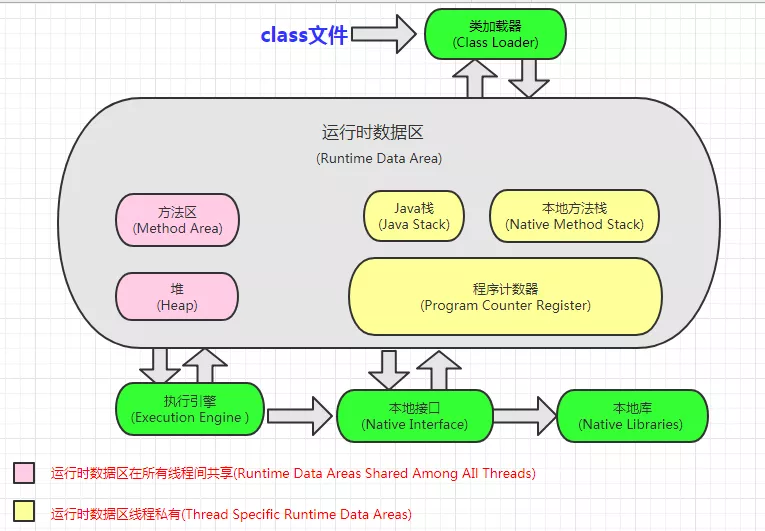
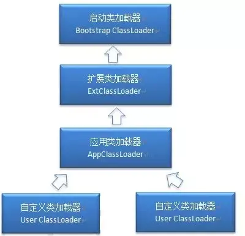
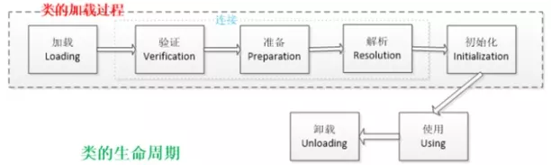

- AQS 万字图文全面解析.md.html
- Docker 镜像构建原理及源码分析.md.html
- ElasticSearch 小白从入门到精通.md.html
- JVM CPU Profiler技术原理及源码深度解析.md.html
- JVM 垃圾收集器.md.html
- JVM 面试的 30 个知识点.md.html
- Java IO 体系、线程模型大总结.md.html
- Java NIO浅析.md.html
- Java 面试题集锦（网络篇）.md.html
- Java-直接内存 DirectMemory 详解.md.html
- Java中9种常见的CMS GC问题分析与解决（上）.md.html
- Java中9种常见的CMS GC问题分析与解决（下）.md.html
- Java中的SPI.md.html
- Java中的ThreadLocal.md.html
- Java线程池实现原理及其在美团业务中的实践.md.html
- Java魔法类：Unsafe应用解析.md.html
- Kafka 源码阅读笔记.md.html
- Kafka、ActiveMQ、RabbitMQ、RocketMQ 区别以及高可用原理.md.html
- MySQL · 引擎特性 · InnoDB Buffer Pool.md.html
- MySQL · 引擎特性 · InnoDB IO子系统.md.html
- MySQL · 引擎特性 · InnoDB 事务系统.md.html
- MySQL · 引擎特性 · InnoDB 同步机制.md.html
- MySQL · 引擎特性 · InnoDB 数据页解析.md.html
- MySQL · 引擎特性 · InnoDB崩溃恢复.md.html
- MySQL · 引擎特性 · 临时表那些事儿.md.html
- MySQL 主从复制 半同步复制.md.html
- MySQL 主从复制 基于GTID复制.md.html
- MySQL 主从复制.md.html
- MySQL 事务日志(redo log和undo log).md.html
- MySQL 亿级别数据迁移实战代码分享.md.html
- MySQL 从一条数据说起-InnoDB行存储数据结构.md.html
- MySQL 地基基础：事务和锁的面纱.md.html
- MySQL 地基基础：数据字典.md.html
- MySQL 地基基础：数据库字符集.md.html
- MySQL 性能优化：碎片整理.md.html
- MySQL 故障诊断：一个 ALTER TALBE 执行了很久，你慌不慌？.md.html
- MySQL 故障诊断：如何在日志中轻松定位大事务.md.html
- MySQL 故障诊断：教你快速定位加锁的 SQL.md.html
- MySQL 日志详解.md.html
- MySQL 的半同步是什么？.md.html
- MySQL中的事务和MVCC.md.html
- MySQL事务_事务隔离级别详解.md.html
- MySQL优化：优化 select count().md.html
- MySQL共享锁、排他锁、悲观锁、乐观锁.md.html
- MySQL的MVCC（多版本并发控制）.md.html
- QingStor 对象存储架构设计及最佳实践.md.html
- RocketMQ 面试题集锦.md.html
- SnowFlake 雪花算法生成分布式 ID.md.html
- Spring Boot 2.x 结合 k8s 实现分布式微服务架构.md.html
- Spring Boot 教程：如何开发一个 starter.md.html
- Spring MVC 原理.md.html
- Spring MyBatis和Spring整合的奥秘.md.html
- Spring 帮助你更好的理解Spring循环依赖.md.html
- Spring 循环依赖及解决方式.md.html
- Spring中眼花缭乱的BeanDefinition.md.html
- Vert.x 基础入门.md.html
- eBay 的 Elasticsearch 性能调优实践.md.html
- 不可不说的Java“锁”事.md.html
- 互联网并发限流实战.md.html
- 从ReentrantLock的实现看AQS的原理及应用.md.html
- 从SpringCloud开始，聊微服务架构.md.html
- 全面了解 JDK 线程池实现原理.md.html
- 分布式一致性理论与算法.md.html
- 分布式一致性算法 Raft.md.html
- 分布式唯一 ID 解析.md.html
- 分布式链路追踪：集群管理设计.md.html
- 动态代理种类及原理，你知道多少？.md.html
- 响应式架构与 RxJava 在有赞零售的实践.md.html
- 大数据算法——布隆过滤器.md.html
- 如何优雅地记录操作日志？.md.html
- 如何设计一个亿级消息量的 IM 系统.md.html
- 异步网络模型.md.html
- 当我们在讨论CQRS时，我们在讨论些神马？.md.html
- 彻底理解 MySQL 的索引机制.md.html
- 最全的 116 道 Redis 面试题解答.md.html
- 有赞权限系统(SAM).md.html
- 有赞零售中台建设方法的探索与实践.md.html
- 服务注册与发现原理剖析（Eureka、Zookeeper、Nacos）.md.html
- 深入浅出Cache.md.html
- 深入理解 MySQL 底层实现.md.html
- 漫画讲解 git rebase VS git merge.md.html
- 生成浏览器唯一稳定 ID 的探索.md.html
- 缓存 如何保证缓存与数据库的双写一致性？.md.html
- 网易严选怎么做全链路监控的？.md.html
- 美团万亿级 KV 存储架构与实践.md.html
- 美团点评Kubernetes集群管理实践.md.html
- 美团百亿规模API网关服务Shepherd的设计与实现.md.html
- 解读《阿里巴巴 Java 开发手册》背后的思考.md.html
- 认识 MySQL 和 Redis 的数据一致性问题.md.html
- 进阶：Dockerfile 高阶使用指南及镜像优化.md.html
- 铁总在用的高性能分布式缓存计算框架 Geode.md.html
- 阿里云PolarDB及其共享存储PolarFS技术实现分析（上）.md.html
- 阿里云PolarDB及其共享存储PolarFS技术实现分析（下）.md.html
- 面试最常被问的 Java 后端题.md.html
- 领域驱动设计在互联网业务开发中的实践.md.html
- 领域驱动设计的菱形对称架构.md.html
- 高效构建 Docker 镜像的最佳实践.md.html
JVM 面试的 30 个知识点
1.什么是 Java 虚拟机？为什么 Java 被称作是“平台无关的编程语言”？
Java 虚拟机是一个可以执行 Java 字节码的虚拟机进程。Java 源文件被编译成能被 Java 虚拟机执行的字节码文件。Java 被设计成允许应用程序可以运行在任意的平台，而不需要程序员为每一个平台单独重写或者是重新编译。Java 虚拟机让这个变为可能，因为它知道底层硬件平台的指令长度和其他特性。
2.Java 内存结构？

方法区和对是所有线程共享的内存区域；而 java 栈、本地方法栈和程序员计数器是运行是线程私有的内存区域。
3.内存模型以及分区，需要详细到每个区放什么？
JVM 分为堆区和栈区，还有方法区，初始化的对象放在堆里面，引用放在栈里面，class 类信息常量池（static 常量和 static 变量）等放在方法区。 new:
- 方法区：主要是存储类信息，常量池（static 常量和 static 变量），编译后的代码（字节码）等数据
- 堆：初始化的对象，成员变量 （那种非 static 的变量），所有的对象实例和数组都要在堆上分配
- 栈：栈的结构是栈帧组成的，调用一个方法就压入一帧，帧上面存储局部变量表，操作数栈，方法出口等信息，局部变量表存放的是 8 大基础类型加上一个应用类型，所以还是一个指向地址的指针
- 本地方法栈：主要为 Native 方法服务
- 程序计数器：记录当前线程执行的行号
4.堆里面的分区：Eden，survival （from+ to），老年代，各自的特点？
堆里面分为新生代和老生代（java8 取消了永久代，采用了 Metaspace），新生代包含 Eden+Survivor 区，survivor 区里面分为 from 和 to 区，内存回收时，如果用的是复制算法，从 from 复制到 to，当经过一次或者多次 GC 之后，存活下来的对象会被移动到老年区，当 JVM 内存不够用的时候，会触发 Full GC，清理 JVM 老年区当新生区满了之后会触发 YGC,先把存活的对象放到其中一个 Survice 区，然后进行垃圾清理。
因为如果仅仅清理需要删除的对象，这样会导致内存碎片，因此一般会把 Eden 进行完全的清理，然后整理内存。
那么下次 GC 的时候，就会使用下一个 Survive，这样循环使用。
如果有特别大的对象，新生代放不下，就会使用老年代的担保，直接放到老年代里面。 因为 JVM 认为，一般大对象的存活时间一般比较久远。
5 .解释内存中的栈(stack)、堆(heap)和方法区(method area)的用法
通常我们定义一个基本数据类型的变量，一个对象的引用，还有就是函数调用的现场保存都使用 JVM 中的栈空间；而通过 new 关键字和构造器创建的对象则放在堆空间，堆是垃圾收集器管理的主要区域，由于现在的垃圾收集器都采用分代收集算法，所以堆空间还可以细分为新生代和老生代，再具体一点可以分为 Eden、Survivor（又可分为 From Survivor 和 To Survivor）、Tenured；方法区和堆都是各个线程共享的内存区域，用于存储已经被 JVM 加载的类信息、常量、静态变量、JIT 编译器编译后的代码等数据；程序中的字面量（literal）如直接书写的 100、”hello”和常量都是放在常量池中，常量池是方法区的一部分，。栈空间操作起来最快但是栈很小，通常大量的对象都是放在堆空间，栈和堆的大小都可以通过 JVM 的启动参数来进行调整，栈空间用光了会引发 StackOverflowError，而堆和常量池空间不足则会引发 OutOfMemoryError。
String str = new String("hello");
上面的语句中变量 str 放在栈上，用 new 创建出来的字符串对象放在堆上，而”hello”这个字面量是放在方法区的。
补充 1：较新版本的 Java（从 Java 6 的某个更新开始）中，由于 JIT 编译器的发展和”逃逸分析”技术的逐渐成熟，栈上分配、标量替换等优化技术使得对象一定分配在堆上这件事情已经变得不那么绝对了。
补充 2：运行时常量池相当于 Class 文件常量池具有动态性，Java 语言并不要求常量一定只有编译期间才能产生，运行期间也可以将新的常量放入池中，String 类的 intern()方法就是这样的。看看下面代码的执行结果是什么并且比较一下 Java 7 以前和以后的运行结果是否一致。
String s1 = new StringBuilder("go")
.append("od").toString();
System.out.println(s1.intern() == s1);
String s2 = new StringBuilder("ja")
.append("va").toString();
System.out.println(s2.intern() == s2);
6.GC 的两种判定方法?
引用计数法：指的是如果某个地方引用了这个对象就+1，如果失效了就-1，当为 0 就 会回收但是 JVM 没有用这种方式，因为无法判定相互循环引用（A 引用 B,B 引用 A） 的情况。 引用链法：通过一种 GC ROOT 的对象（方法区中静态变量引用的对象等-static 变 量）来判断，如果有一条链能够到达 GC ROOT 就说明，不能到达 GC ROOT 就说明 可以回收
7.SafePoint 是什么?
比如 GC 的时候必须要等到 Java 线程都进入到 safepoint 的时候 VMThread 才能开始执行 GC 1.循环的末尾 (防止大循环的时候一直不进入 safepoint，而其他线程在等待它进入 safepoint) 2.方法返回前 3.调用方法的 call 之后 4.抛出异常的位置
8.GC 的三种收集方法：标记清除、标记整理、复制算法的原理与特点，分别用在什么地方，如果让你优化收集方法，有什么思路？
先标记，标记完毕之后再清除，效率不高，会产生碎片 复制算法：分为 8：1 的 Eden 区和 survivor 区，就是上面谈到的 YGC 标记整理：标记完毕之后，让所有存活的对象向一端移动
9.GC 收集器有哪些？CMS 收集器与 G1 收集器的特点？
并行收集器：串行收集器使用一个单独的线程进行收集，GC 时服务有停顿时间 串行收集器：次要回收中使用多线程来执行 CMS 收集器是基于“标记—清除”算法实现的，经过多次标记才会被清除 G1 从整体来看是基于“标记—整理”算法实现的收集器，从局部（两个 Region 之间）上来看是基于“复制”算法实现的
10.Minor GC 与 Full GC 分别在什么时候发生？
新生代内存不够用时候发生 MGC 也叫 YGC，JVM 内存不够的时候发生 FGC
11. 几种常用的内存调试工具：jmap、jstack、jconsole、jhat？
jstack 可以看当前栈的情况，jmap 查看内存，jhat 进行 dump 堆的信息 mat（eclipse 的也要了解一下）
12.什么是类的加载
类的加载指的是将类的.class 文件中的二进制数据读入到内存中，将其放在运行时数据区的方法区内，然后在堆区创建一个 java.lang.Class 对象，用来封装类在方法区内的数据结构。类的加载的最终产品是位于堆区中的 Class 对象，Class 对象封装了类在方法区内的数据结构，并且向 Java 程序员提供了访问方法区内的数据结构的接口。
13.类加载器

- 启动类加载器：Bootstrap ClassLoader，负责加载存放在 JDK\jre\lib(JDK 代表 JDK 的安装目录，下同)下，或被-Xbootclasspath 参数指定的路径中的，并且能被虚拟机识别的类库
- 扩展类加载：Extension ClassLoader，该加载器由 sun.misc.Launcher$ExtClassLoader 实现，它负责加载 DK\jre\lib\ext 目录中，或者由 java.ext.dirs 系统变量指定的路径中的所有类库（如 javax.*开头的类），开发者可以直接使用扩展类加载器。
- 应用程序类加载器：Application ClassLoader，该类加载器由 sun.misc.Launcher$AppClassLoader 来实现，它负责加载用户类路径（ClassPath）所指定的类，开发者可以直接使用该类加载器
14.描述一下 JVM 加载 class 文件的原理机制？
JVM 中类的装载是由类加载器（ClassLoader）和它的子类来实现的，Java 中的类加载器是一个重要的 Java 运行时系统组件，它负责在运行时查找和装入类文件中的类。
由于 Java 的跨平台性，经过编译的 Java 源程序并不是一个可执行程序，而是一个或多个类文件。当 Java 程序需要使用某个类时，JVM 会确保这个类已经被加载、连接（验证、准备和解析）和初始化。类的加载是指把类的.class 文件中的数据读入到内存中，通常是创建一个字节数组读入.class 文件，然后产生与所加载类对应的 Class 对象。加载完成后，Class 对象还不完整，所以此时的类还不可用。当类被加载后就进入连接阶段，这一阶段包括验证、准备（为静态变量分配内存并设置默认的初始值）和解析（将符号引用替换为直接引用）三个步骤。最后 JVM 对类进行初始化，包括：
- 1)如果类存在直接的父类并且这个类还没有被初始化，那么就先初始化父类；
- 2)如果类中存在初始化语句，就依次执行这些初始化语句。
类的加载是由类加载器完成的，类加载器包括：根加载器（BootStrap）、扩展加载器（Extension）、系统加载器（System）和用户自定义类加载器（java.lang.ClassLoader 的子类）。
从 Java 2（JDK 1.2）开始，类加载过程采取了父亲委托机制（PDM）。PDM 更好的保证了 Java 平台的安全性，在该机制中，JVM 自带的 Bootstrap 是根加载器，其他的加载器都有且仅有一个父类加载器。类的加载首先请求父类加载器加载，父类加载器无能为力时才由其子类加载器自行加载。JVM 不会向 Java 程序提供对 Bootstrap 的引用。下面是关于几个类加载器的说明：
- Bootstrap：一般用本地代码实现，负责加载 JVM 基础核心类库（rt.jar）；
- Extension：从 java.ext.dirs 系统属性所指定的目录中加载类库，它的父加载器是 Bootstrap；
- System：又叫应用类加载器，其父类是 Extension。它是应用最广泛的类加载器。它从环境变量 classpath 或者系统属性 java.class.path 所指定的目录中记载类，是用户自定义加载器的默认父加载器。
15.Java 对象创建过程
1.JVM 遇到一条新建对象的指令时首先去检查这个指令的参数是否能在常量池中定义到一个类的符号引用。然后加载这个类（类加载过程在后边讲）
2.为对象分配内存。一种办法“指针碰撞”、一种办法“空闲列表”，最终常用的办法“本地线程缓冲分配(TLAB)”
3.将除对象头外的对象内存空间初始化为 0
4.对对象头进行必要设置
16.类的生命周期
类的生命周期包括这几个部分，加载、连接、初始化、使用和卸载，其中前三部是类的加载的过程,如下图；

java 类加载需要经历以下 几个过程：
- 加载
加载时类加载的第一个过程，在这个阶段，将完成以下三件事情：
1.通过一个类的全限定名获取该类的二进制流。
2.将该二进制流中的静态存储结构转化为方法去运行时数据结构。
3.在内存中生成该类的 Class 对象，作为该类的数据访问入口。
- 验证
验证的目的是为了确保 Class 文件的字节流中的信息不回危害到虚拟机.在该阶段主要完成以下四钟验证:
文件格式验证：验证字节流是否符合 Class 文件的规范，如主次版本号是否在当前虚拟机范围内，常量池中的常量是否有不被支持的类型.
元数据验证:对字节码描述的信息进行语义分析，如这个类是否有父类，是否集成了不被继承的类等。
字节码验证：是整个验证过程中最复杂的一个阶段，通过验证数据流和控制流的分析，确定程序语义是否正确，主要针对方法体的验证。 如： 方法中的类型转换是否正确，跳转指令是否正确等。
符号引用验证： 这个动作在后面的解析过程中发生，主要是为了确保解析动作能正确执行。
- 准备
准备阶段是为类的静态变量分配内存并将其初始化为默认值，这些内存都将在方法区中进行分配。准备阶段不分配类中的实例变量的内存，实例变量将会在对象实例化时随着对象一起分配在 Java 堆中。
public static int value=123;
//在准备阶段 value 初始值为 0 。
在初始化阶段才会变为 123。
- 解析
该阶段主要完成符号引用到直接引用的转换动作。解析动作并不一定在初始化动作完成之前，也有可能在初始化之后。
- 初始化
初始化时类加载的最后一步，前面的类加载过程，除了在加载阶段用户应用程序可以通过自定义类加载器参与之外，其余动作完全由虚拟机主导和控制。 到了初始化阶段，才真正开始执行类中定义的 Java 程序。
17.简述 java 类加载机制?
虚拟机把描述类的数据从 Class 文件加载到内存，并对数据进行校验，解析和初始化，最终形成可以被虚拟机直接使用的 java 类型。
18.Java 对象结构
Java 对象由三个部分组成：对象头、实例数据、对齐填充。
对象头由两部分组成，第一部分存储对象自身的运行时数据：哈希码、GC 分代年龄、锁标识状态、线程持有的锁、偏向线程 ID（一般占 32/64 bit）。
第二部分是指针类型，指向对象的类元数据类型（即对象代表哪个类）。如果是数组对象，则对象头中还有一部分用来记录数组长度。
实例数据用来存储对象真正的有效信息（包括父类继承下来的和自己定义的）
对齐填充：JVM 要求对象起始地址必须是 8 字节的整数倍（8 字节对齐）
19.Java 对象的定位方式
句柄池、直接指针。
20.如和判断一个对象是否存活?(或者 GC 对象的判定方法)
判断一个对象是否存活有两种方法:
1.引用计数法
所谓引用计数法就是给每一个对象设置一个引用计数器，每当有一个地方引用这个对象时，就将计数器加一，引用失效时，计数器就减一。当一个对象的引用计数器为零时，说明此对象没有被引用，也就是“死对象”,将会被垃圾回收。 引用计数法有一个缺陷就是无法解决循环引用问题，也就是说当对象 A 引用对象 B，对象 B 又引用者对象 A，那么此时 A,B 对象的引用计数器都不为零，也就造成无法完成垃圾回收，所以主流的虚拟机都没有采用这种算法。
2.可达性算法(引用链法)
该算法的思想是：从一个被称为 GC Roots 的对象开始向下搜索，如果一个对象到 GC Roots 没有任何引用链相连时，则说明此对象不可用。 在 java 中可以作为 GC Roots 的对象有以下几种： 虚拟机栈中引用的对象
方法区类静态属性引用的对象
方法区常量池引用的对象
本地方法栈 JNI 引用的对象
虽然这些算法可以判定一个对象是否能被回收，但是当满足上述条件时，一个对象比不一定会被回收。当一个对象不可达 GC Root 时，这个对象并不会立马被回收，而是出于一个死缓的阶段，若要被真正的回收需要经历两次标记如果对象在可达性分析中没有与 GC Root 的引用链，那么此时就会被第一次标记并且进行一次筛选，筛选的条件是是否有必要执行 finalize()方法。当对象没有覆盖 finalize()方法或者已被虚拟机调用过，那么就认为是没必要的。
如果该对象有必要执行 finalize()方法，那么这个对象将会放在一个称为 F-Queue 的对队列中，虚拟机会触发一个 Finalize()线程去执行，此线程是低优先级的，并且虚拟机不会承诺一直等待它运行完，这是因为如果 finalize()执行缓慢或者发生了死锁，那么就会造成 FQueue 队列一直等待，造成了内存回收系统的崩溃。 GC 对处于 F-Queue 中的对象进行第二次被标记，这时，该对象将被移除”即将回收”集合，等待回收。
21.JVM 的永久代中会发生垃圾回收么？
垃圾回收不会发生在永久代，如果永久代满了或者是超过了临界值，会触发完全垃圾回收(Full GC)。如果你仔细查看垃圾收集器的输出信息，就会发现永久代也是被回收的。这就是为什么正确的永久代大小对避免 Full GC 是非常重要的原因。请参考下 Java8：从永久代到元数据区 (注：Java8 中已经移除了永久代，新加了一个叫做元数据区的 native 内存区)
22.简述 java 内存分配与回收策率以及 Minor GC 和 Major GC？
1.对象优先在堆的 Eden 区分配。
2.大对象直接进入老年代.
3.长期存活的对象将直接进入老年代.，当 Eden 区没有足够的空间进行分配时，虚拟机会执行一次 Minor GC.Minor Gc 通常发生在新生代的 Eden 区，在这个区的对象生存期短，往往发生 Gc 的频率较高， 回收速度比较快;Full Gc/Major GC 发生在老年代，一般情况下，触发老年代 GC 的时候不会触发 Minor GC,但是通过配置，可以在 Full GC 之前进行一次 MinorGC 这样可以加快老年代的回收速度。
23.判断一个对象应该被回收
该对象没有与 GC Roots 相连
该对象没有重写 finalize()方法或 finalize()已经被执行过则直接回收（第一次标记）、否则将对象加入到 F-Queue 队列中（优先级很低的队列）在这里 finalize()方法被执行，之后进行第二次标记，如果对象仍然应该被 GC 则 GC，否则移除队列。（在 finalize 方法中，对象很可能和其他 GC Roots 中的某一个对象建立了关联，finalize 方法只会被调用一次，且不推荐使用 finalize 方法）
24.回收方法区
方法区回收价值很低，主要回收废弃的常量和无用的类。
如何判断无用的类：
该类所有实例都被回收（Java 堆中没有该类的对象）
加载该类的 ClassLoader 已经被回收
该类对应的 java.lang.Class 对象没有在任何地方被引用，无法在任何地方利用反射访问该类
25.垃圾收集算法
GC 最基础的算法有三种：标记 -清除算法、复制算法、标记-压缩算法，我们常用的垃圾回收器一般都采用分代收集算法。
- 标记 -清除算法，“标记-清除”（Mark-Sweep）算法，如它的名字一样，算法分为“标记”和“清除”两个阶段：首先标记出所有需要回收的对象，在标记完成后统一回收掉所有被标记的对象。
- 复制算法，“复制”（Copying）的收集算法，它将可用内存按容量划分为大小相等的两块，每次只使用其中的一块。当这一块的内存用完了，就将还存活着的对象复制到另外一块上面，然后再把已使用过的内存空间一次清理掉。
- 标记-压缩算法，标记过程仍然与“标记-清除”算法一样，但后续步骤不是直接对可回收对象进行清理，而是让所有存活的对象都向一端移动，然后直接清理掉端边界以外的内存
- 分代收集算法，“分代收集”（Generational Collection）算法，把 Java 堆分为新生代和老年代，这样就可以根据各个年代的特点采用最适当的收集算法。
26.垃圾回收器
Serial 收集器，串行收集器是最古老，最稳定以及效率高的收集器，可能会产生较长的停顿，只使用一个线程去回收。
ParNew 收集器，ParNew 收集器其实就是 Serial 收集器的多线程版本。
Parallel 收集器，Parallel Scavenge 收集器类似 ParNew 收集器，Parallel 收集器更关注系统的吞吐量。
Parallel Old 收集器，Parallel Old 是 Parallel Scavenge 收集器的老年代版本，使用多线程和“标记－整理”算法
CMS 收集器，CMS（Concurrent Mark Sweep）收集器是一种以获取最短回收停顿时间为目标的收集器。
G1 收集器，G1 (Garbage-First)是一款面向服务器的垃圾收集器,主要针对配备多颗处理器及大容量内存的机器. 以极高概率满足 GC 停顿时间要求的同时,还具备高吞吐量性能特征
27.GC 日志分析
摘录 GC 日志一部分（前部分为年轻代 gc 回收；后部分为 full gc 回收）：
2016-07-05T10:43:18.093+0800: 25.395: [GC [PSYoungGen: 274931K->10738K(274944K)] 371093K->147186K(450048K), 0.0668480 secs] [Times: user=0.17 sys=0.08, real=0.07 secs]
2016-07-05T10:43:18.160+0800: 25.462: [Full GC [PSYoungGen: 10738K->0K(274944K)] [ParOldGen: 136447K->140379K(302592K)] 147186K->140379K(577536K) [PSPermGen: 85411K->85376K(171008K)], 0.6763541 secs] [Times: user=1.75 sys=0.02, real=0.68 secs]
通过上面日志分析得出，PSYoungGen、ParOldGen、PSPermGen 属于 Parallel 收集器。其中 PSYoungGen 表示 gc 回收前后年轻代的内存变化；ParOldGen 表示 gc 回收前后老年代的内存变化；PSPermGen 表示 gc 回收前后永久区的内存变化。young gc 主要是针对年轻代进行内存回收比较频繁，耗时短；full gc 会对整个堆内存进行回城，耗时长，因此一般尽量减少 full gc 的次数
28.调优命令
Sun JDK 监控和故障处理命令有 jps jstat jmap jhat jstack jinfo
- jps，JVM Process Status Tool,显示指定系统内所有的 HotSpot 虚拟机进程。
- jstat，JVM statistics Monitoring 是用于监视虚拟机运行时状态信息的命令，它可以显示出虚拟机进程中的类装载、内存、垃圾收集、JIT 编译等运行数据。
- jmap，JVM Memory Map 命令用于生成 heap dump 文件
- jhat，JVM Heap Analysis Tool 命令是与 jmap 搭配使用，用来分析 jmap 生成的 dump，jhat 内置了一个微型的 HTTP/HTML 服务器，生成 dump 的分析结果后，可以在浏览器中查看
- jstack，用于生成 java 虚拟机当前时刻的线程快照。
- jinfo，JVM Configuration info 这个命令作用是实时查看和调整虚拟机运行参数。
29.调优工具
常用调优工具分为两类,jdk 自带监控工具：jconsole 和 jvisualvm，第三方有：MAT(Memory Analyzer Tool)、GChisto。
jconsole，Java Monitoring and Management Console 是从 java5 开始，在 JDK 中自带的 java 监控和管理控制台，用于对 JVM 中内存，线程和类等的监控
jvisualvm，jdk 自带全能工具，可以分析内存快照、线程快照；监控内存变化、GC 变化等。
MAT，Memory Analyzer Tool，一个基于 Eclipse 的内存分析工具，是一个快速、功能丰富的 Java heap 分析工具，它可以帮助我们查找内存泄漏和减少内存消耗
GChisto，一款专业分析 gc 日志的工具
30.Minor GC 与 Full GC 分别在什么时候发生？
新生代内存不够用时候发生 MGC 也叫 YGC，JVM 内存不够的时候发生 FGC